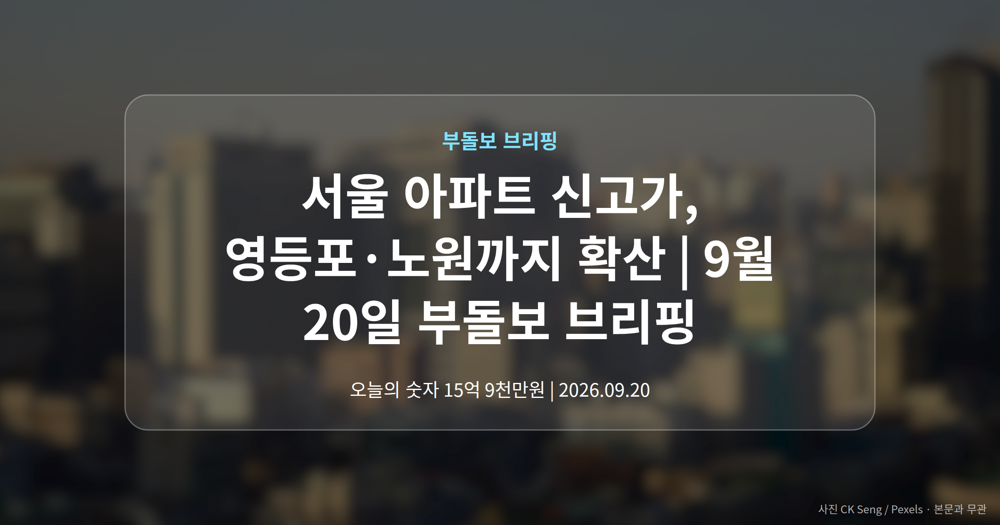
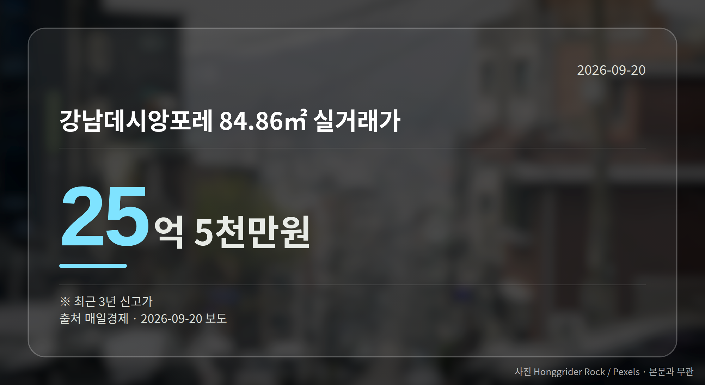

이 글은 2026년 9월 20일 기준으로 정리한 내용입니다.
오늘 서울 아파트 신고가 소식이 한꺼번에 나왔습니다. 강남뿐 아니라 영등포·서대문·구로·노원까지 6개 단지에서 최근 3년 신고가 거래가 확인됐습니다.
가격대는 5억원대부터 25억원대까지 넓게 퍼져 있습니다. 특정 지역만의 이야기로 보기는 어려운 흐름입니다.
매일경제 보도로 확인된 6개 단지의 거래 내역입니다. 여기서 신고가란 해당 면적에서 지금까지 기록된 가격 중 가장 높은 거래를 뜻하고, 오늘 사례는 모두 '최근 3년' 기준입니다.
| 단지 (면적) | 실거래가 |
|---|---|
| 강남구 강남데시앙포레 84.86㎡ | 25억 5천만원 |
| 서대문구 DMC래미안e편한세상 84.94㎡ | 16억 3900만원 |
| 영등포구 영등포푸르지오 59.912㎡ | 15억 9천만원 |
| 구로구 구로동 우방 84.9㎡ | 7억 4천만원 |
| 노원구 중계3벽산 59.88㎡ | 7억 3500만원 |
| 노원구 상계주공12단지 41.3㎡ | 5억 8천만원 |
표에서 보시듯 대형 면적 위주도 아니고, 한 권역에 몰린 것도 아닙니다.

의미는 분명합니다. 강남권 밖에서도 같은 날 신고가가 확인됐다는 점에서, 매수세가 한 지역에 국한돼 있다고 보기는 어렵습니다.
다만 한계도 뚜렷합니다. 각 기사는 가격과 신고가 여부만 전하는 단신이라, 계약일이나 거래 배경, 이후 전망은 담겨 있지 않습니다.
그래서 해당 단지 소유자나 매수를 생각하시는 분이라면, 이 숫자 하나로 판단하기보다 같은 단지의 다른 거래들이 어떻게 이어지는지 함께 보시는 편이 안전합니다.
뒤의 두 건은 제목만 확인되고 본문 내용이 없어, 대상 지역이나 공급 물량은 아직 알 수 없습니다. 오세훈 시장 발언도 한쪽 입장만 나온 상태로, 정부 측 반응은 확인되지 않았습니다.
확정된 사실과 아직 확인되지 않은 이야기를 나눠서 보시는 게 오늘은 특히 필요해 보입니다.
여러분이 보고 계신 단지는 지금 어느 가격대에서 거래가 이뤄지고 있나요?
댓글로 알려 주시면 다음 글에 반영하겠습니다.